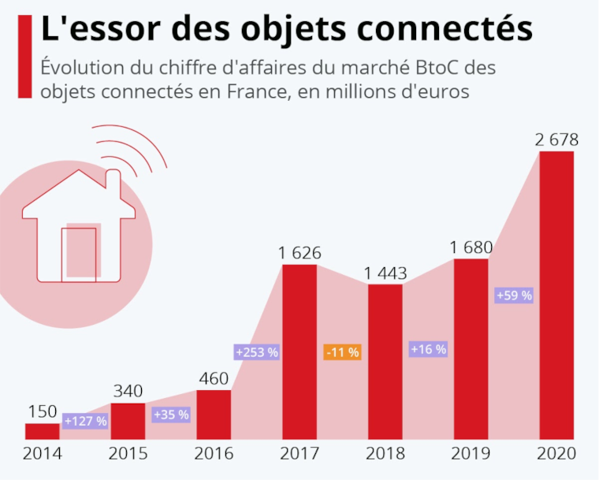

La pollution numérique : quelles en sont les causes, pour quels impacts, et comment la réduire ?
Dans un monde toujours plus digitalisé, nous assistons à la montée en flèche de la pollution numérique. La pollution numérique, ce sont toutes les formes de pollution engendrées par les nouvelles technologies. Le secteur du numérique est responsable de 4% des émissions de gaz à effet de serre dans le monde, soit 1.5 fois plus que le transport aérien ! Il s’agit finalement de l’une des industries les plus polluantes aujourd’hui…
Voyons quels sont les principales causes de cette pollution :
Les objets connectés
Quels impacts les objets connectés ont-ils sur l’environnement ?
La demande d’objets connectés étant grandissante, on va devoir en fabriquer davantage. Or, on sait que la fabrication est la phase la plus polluante d’un appareil électronique puisqu’elle nécessite l’extraction de minerais rares ainsi que de l’électricité. Ensuite, la phase d’utilisation est également polluante puisque ces objets fonctionnent avec des batteries qui demandent d’être rechargées plus ou moins souvent et donc nécessite de l’électricité. La fin de vie de ces objets pose également problème puisque les métaux rares présents dans l’objet sont difficilement recyclables et finissent généralement dans des pays pauvres qui vont tenter de récupérer ces métaux qui vont finir par polluer le sol et l’eau.
Existe-t-il des objets utiles pour lutter contre la pollution ?
Oui, les objets connectés ont effectivement un impact sur l’environnement, car ils ont besoin de ressources et d'énergie pour fonctionner mais certains objets peuvent également lutter contre certains de nos impacts. Par exemple, les thermostats connectés permettent de régler la température de la maison afin de ne pas surchauffer et donc de ne pas utiliser trop d’énergie. Des prises connectées permettent quant à elles de suivre la consommation d'énergie des appareils qui y sont branchés et d’éteindre les appareils à distance. Des robinets ou douches connectés vont analyser notre consommation d’eau et donner des conseils pour la réduire.
Quel sera l’impact des objets connectés dans le futur ?
En 2020, on dénombre entre 30 et 75 milliards d’objets connectés, ils étaient 300 millions en 2003. Si aujourd’hui, il y a une très grande agitation pour ces objets, ces derniers représentent moins de 1% des impacts environnementaux du numérique, mais en 2025, ils représenteront entre 18% et 23% de ces impacts.
Avec cet engouement pour ces technologies, les entreprises devront en fabriquer davantage, ce qui aura des conséquences sur l’environnement. Ces objets sont composés de métaux précieux et toxiques. Ces matières demandent également beaucoup d’énergies pour leur extraction. Avant même d’être utilisés, ils auront émis 73% de gaz à effet de serre de leur cycle de vie. Rappelons que la phase la plus polluante d’un équipement numérique est bien sa fabrication.
Avec le renouvellement perpétuel de nos appareils, ceux-ci ont un cycle de vie plus court et contribuent à cette pollution. De plus, avec cette augmentation dans les années futures, le bilan en carbone ne fera que s’alourdir.

Les objets sont-ils vraiment néfastes pour l’environnement ?
Oui, comme nous l'avons vu, les objets connectés sont néfastes pour la planète. Ils ont besoins de ressources et métaux rares pour être construits, ils ont besoin d'énergie pour fonctionner et surtout, ils sont de plus en plus nombreux. Cependant, ils peuvent aussi nous accompagner dans la transition écologique. Certains objets sont fabriqués pour diminuer notre consommation énergétique et faire un geste pour l’environnement. Ils peuvent être écoresponsables et aider à la transition écologique.
Cependant, ce type d'objet connecté, qui nous aider à mieux gérer nos ressources, reste assez rare. Il est donc important de garder un avis nuancé sur la question.
L'intelligence artificielle
Quel est l’impact environnemental de l’intelligence artificielle ?
Saviez-vous que l'intelligence artificielle, même si on ne la voit pas, peut avoir un gros impact sur notre environnement ? Même si nous ne le voyons pas, les machines derrière l'IA utilisent énormément d'électricité !
Pourquoi est-il important de penser à l'éthique lorsque nous utilisons l'IA pour l'environnement ?
L'intelligence artificielle (IA) est une technologie prometteuse qui offre de nombreuses opportunités, mais elle soulève également des préoccupations éthiques.
Au niveau des diagnostics médicaux, l’IA peut aider à poser des diagnostics plus précis. Sur les réseaux sociaux, l’IA peut faciliter les interactions entre les personnes ou diffuser rapidement de l’information. L’IA peut également libérer les humains de tâches répétitives et dangereuses.
Cependant, l’IA peut aussi représenter une menace pour les droits humains, dégrader le climat et créer des divisions sociales. L’IA peut permettre un contrôle de l’information.
Mais l'éthique concerne aussi l'environnement lui-même. L'IA consomme beaucoup d'énergie, et si celle-ci provient de sources polluantes, cela peut nuire à notre planète. Par exemple, le simple entraînement d'une IA équivaut en termes de CO2 aux émissions de 205 allers-retours Paris/New York en avion.
L’IA est une technologie très puissante qui peut avoir une influence positive ou négative sur la société. Il est important de réfléchir aux implications éthiques de l’IA et de développer des cadres de gouvernance qui garantiront une utilisation responsable.
L'intelligence artificielle peut-elle contribuer à la conservation de la biodiversité ?
L'intelligence artificielle, ou IA, a le potentiel de jouer un rôle majeur dans la conservation de la biodiversité. Elle peut aider à surveiller les espèces menacées, à prédire les changements dans leurs habitats et à mieux comprendre comment protéger la diversité de la vie sur notre planète. Il existe une intelligence artificielle qui peut identifier une espèce avec 80 à 90 % de précision.
Par exemple, certains scientifiques utilisent l'IA pour analyser les images des caméras de surveillance dans les parcs naturels. L'IA peut rapidement identifier les différentes espèces et observer leurs comportements, ce qui serait un travail très long et difficile pour les humains.
L'IA est également utilisée pour prédire comment les changements climatiques pourraient affecter les habitats de différentes espèces. Ces informations peuvent aider à planifier des actions de conservation pour protéger ces espèces.
Cependant, l'utilisation de l'IA pour la conservation de la biodiversité comporte aussi des défis. Par exemple, les données nécessaires pour entraîner l'IA peuvent être difficiles à obtenir. De plus, comme pour toute technologie, l'IA utilise de l'énergie et peut générer des déchets électroniques.
Donc, bien que l'IA ait un potentiel énorme pour aider à la conservation de la biodiversité, il est essentiel de l'utiliser de manière responsable et éthique.
L'intelligence artificielle, ou IA, peut également jouer un rôle important dans la gestion des déchets. Elle peut, par exemple, aider à trier les déchets de manière plus précise et rapide, ce qui permet de recycler plus et de jeter moins.
Il y a des projets innovants qui utilisent l'IA pour cela. Par exemple, certains robots équipés d'IA peuvent reconnaître et trier différents types de déchets, augmentant l'efficacité du recyclage. Recycleye propose une intelligence artificielle pouvant aller jusqu’à 33 000 prélèvements en 10 heures. Dans certaines villes, l'IA est même utilisée pour optimiser la collecte des déchets, en déterminant les itinéraires les plus efficaces pour les camions poubelles.
Cependant, l'utilisation de l'IA pour la gestion des déchets comporte aussi des défis. Par exemple, l'IA a besoin de beaucoup de données pour apprendre à reconnaître les différents types de déchets. De plus, il faut aussi penser à l'énergie nécessaire pour faire fonctionner ces systèmes d'IA, et à la fin de leur vie, ces systèmes deviennent eux-mêmes des déchets.
Donc, même si l'IA a le potentiel d'améliorer la gestion des déchets, il est important de réfléchir aux impacts éthiques et environnementaux de son utilisation.
L’intelligence artificielle peut elle aider à protéger les océans ?
L'intelligence artificielle peut aussi nous aide à mieux comprendre et protéger la nature. Elle peut permettre à certains robots, qui ressemblent beaucoup à des animaux, de faire des choses incroyables.
Prenons l'exemple des robots-poissons, grâce à l'IA, ils peuvent nager dans l'océan, observer les vrais poissons et comprendre comment ils vivent. Ces informations sont très utiles pour nous aider à protéger l'océan et tous ses habitants.
Mais souvenez-vous, même si ces robots-animaux sont utile, ils ont besoin d'énergie pour fonctionner. C'est pourquoi il est important de réfléchir à comment nous pouvons utiliser moins d'énergie et prendre soin de notre belle planète.
Les flux vidéos / Le streaming
En quoi les plateformes de vidéos polluent-elles ?
Durant l’année 2018, la consommation de vidéos a généré autant de CO2 qu’un pays comme l’Espagne ! Cette pollution provient de la quantité nécessaire d’électricité dont les data centers (qui stockent toutes les vidéos) ont besoin pour fonctionner et aussi pour refroidir. Cette pollution provient également de la fabrication de ces data center.
Pourquoi le streaming contribue-t-il au changement climatique/ à la pollution numérique ?
Dans les 4% d’émission de gaz à effet de serre produit par le numérique, 80% sont dédiés aux flux vidéos. Dans un premier temps, cela est dû à la production nécessaire à l’acheminement des vidéos stockées dans le data center vers les terminaux (tablette, smartphone…). Ensuite, le format vidéo est lourd. Il est estimé que 10 heures de streaming vidéo en ligne représentent davantage de données que l’intégralité des textes Wikipédia anglais. La taille du fichier est également très polluante, le film Pulp Fiction en Haute Définition sur Netflix représente à lui seul 10 giga-octets, contre 50 kilo-octets pour un mail sans pièce jointe, soit 200 000 fois plus.
Quel est le coût environnemental du streaming vidéo ?
On estime qu’une personne ayant regardé la série Game of Thrones a généré une émission de 8,8 kg de CO2, ce qui est égal à un parcours de 130 km pour une voiture citadine. Les séries Stranger Things et Breaking Bad correspondent quant à elles à 2,8 et 6,3 kg de CO2. Regarder des vidéos Youtube représente l’émission de 11,3 millions de tonnes de gaz à effet de serre, chaque année. Son empreinte carbone annuelle équivaut à 2 millions de fois le tour du monde en avion ou bien la pollution totale générée par une ville de 600 000 d’habitants.